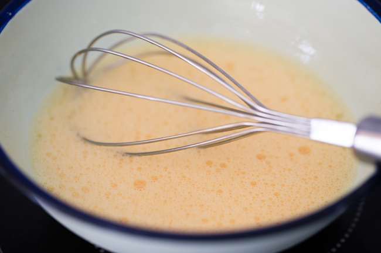
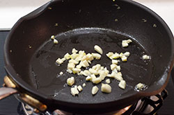
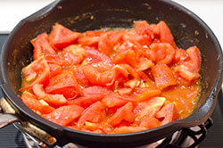

Today you will learn how to Chinese Stir-Fried Tomatoes and Eggs in simple steps.
Ingredients
6 eggs
Kosher salt
½ teaspoon sesame oil
1 tablespoon Shaoxing rice wine or dry sherry
1 teaspoon cornstarch
1 teaspoon sugar
2 tablespoons ketchup
1 pound beefsteak tomatoes in season, or 1 14.5-ounce can of diced tomatoes in juice
4 tablespoons vegetable oil
3 scallions, sliced
1 teaspoon minced ginger (from about 1/4-inch nub)
Steamed rice, for serving
Click on the image to begin
-

In a mixing bowl, beat the eggs well with 1 teaspoon salt, sesame oil and rice wine or sherry. In a small bowl, stir together the cornstarch and 2 tablespoons water until well combined, then stir in the sugar and ketchup.
-
If using fresh tomatoes, core and cut them into 1/2-inch wide wedges.
-

Heat a wide nonstick skillet over high heat with 3 tablespoons of vegetable oil. When the oil shimmers, add most of the scallions, saving some to garnish. Cook, stirring, until very aromatic, about 20 seconds. Add the eggs, and cook, stirring well with a spatula or chopsticks, until just set but still runny, about 45 seconds. Pour the eggs back into the mixing bowl, and wipe out the pan.
-

Reheat the pan over high heat with the remaining tablespoon of oil. When it is hot, add the ginger and cook until aromatic, about 15 seconds. Add the tomatoes and salt to taste; cook, stirring occasionally, until the flesh has softened but still has some shape and the juices have begun to form a sauce, 2-3 minutes. (If using canned tomatoes, add the juice as well and cook about 4 minutes, to reduce it to a saucelike consistency.)
-
Reduce the heat to medium. Give the cornstarch-ketchup mixture a stir in its bowl, then stir it into the pan. Cook, stirring, until the sauce returns to a boil and thickens. Taste and adjust seasoning with salt, sugar or more ketchup — you want a savory, tart-sweet sauce. Stir the eggs in the bowl to cut up the curds a bit, then return them to the pan. Cook, stirring, for a few seconds to finish cooking the eggs and to combine. Top with the reserved scallions, and serve with steamed rice.
Thank you for visiting my tutorial.
Come back soon!!